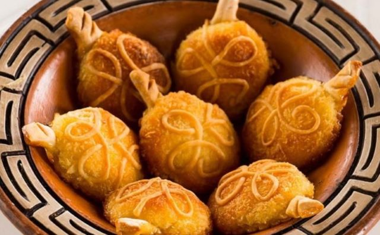

Bem-vindos ao Maranhão!
Conhecer o Maranhão é vivenciar momentos únicos durante o ano todo. Aqui a vida acontece! O Maranhão espera por você!
CONHEÇA A NOSSA CULINÁRIA
O Maranhão é um estado litorâneo nordestino, localizado no oeste da região, em divisa com o Piauí e Tocantins e Pará. Rico em belezas naturais e em cultura, sua culinária é caracterizada pelos sabores regionais e pela riqueza de temperos do Nordeste. Com muita tradição e iguarias, a culinária maranhense é uma das mais consagradas culinárias brasileiras, representando bem a região nordestina. Confira uma seleção de pratos típicos para conhecer um pouco mais sobre a gastronomia do Maranhão:
Arroz de cuxá com peixe frito: prato típico maranhense.

Arroz de cuxá Provavelmente o prato mais tradicional da culinária maranhense, o arroz de cuxá é feito com a vinagreira, também conhecida como azedinha. Tradicionalmente servido como acompanhamento para frutos-do-mar, peixes fritos e ensopados, esse arroz demanda maestria em seu preparo, porque a vinagreira é uma erva ácida e amarga, o que dificulta seu preparo e exige um controle de proporções para que o arroz não fique com um gosto ruim. Mas quando bem feito, é uma experiência única para o seu paladar!
Peixada Maranhense.

Parecida com uma moqueca, a peixada maranhense é um cozido bem temperado de peixe, normalmente feita de pescada, mas também pode ser feita com outros peixes parecidos. Seu diferencial é o ovo cozido que vai junto. Um prato único e típico da região, que vai bem até em dias de calor.
Carne de Sol.
A carne de sol é um clássico da culinária nordestina como um todo, fazendo parte do dia-a-dia da região. No Maranhão não seria diferente e por isso existem várias preparações diferentes. Desde paçoca de carne de sol até grelhada com bastante manteiga de garrafa, o segredo da versão maranhense está nos acompanhamentos que, além de mandioca frita, farofa e queijo coalho, também pode acompanhar banana frita, bastante arroz e feijão com legumes.
Sururu ao leite de coco.
O sururu é um molusco muito consumido no litoral do Nordeste. Extremamente saboroso, permite várias combinações e na culinária maranhense ele se junta ao leite de coco para virar um ensopado parecido com uma moqueca, muito apetitoso e bem temperado com sabores típicos da região como dendê, coentro e pimenta-de-cheiro.
Pratos com caranguejo
O caranguejo é outra proteína fundamental dos pratos típicos maranhenses: o Maranhão detém 85% dos mangues do Nordeste, habitat natural deste animal. Sendo assim, a pesca de caranguejos é muito exploradas pela população local e isso reflete na alimentação. Feito de diversas formas, a maneira mais típica, entretanto, é provavelmente a caranguejada. Há também a torta maranhense, que é uma torta de massa a base de ovos batidos, que não vai farinha, e é recheada com caranguejo.
Pratos com camarão.

O camarão é uma proteína base da culinária maranhense, sendo muito consumido pela população e em diversos preparos diferentes. Desde frito até em moqueca, o camarão é um curinga dentro dos pratos maranhenses. Ele também pode ser consumido com açaí e em deliciosas tortas!
Juçara.
A juçara é o açaí do Maranhão. As frutas, que são da mesma família, são diferentes entre si, mas são consumidas de maneira semelhante. Apesar de ser consumida com granola e banana por algumas pessoas, a maneira preferida de consumo dos maranhenses é com camarão seco e farinha d'água, podendo ser consumida até com carne de sol.
Doce de espécie.
Parecido com um bombocado, o doce de espécie é uma iguaria típica da cidade de Alcântara. Um doce simples e similar a um biscoito caseiro, é feito com farinha e manteiga, sendo recheado com uma espécie de cocada cremosa. É muito tradicional em todo o estado e é bem servido acompanhando um café ou doces de compota.
Mingau de Tapioca.

Muito consumido em festas de São João, o mingau de tapioca se parece com o curau de milho. De sabor muito leve e fácil de fazer, ele é uma delícia quando servido quente. Para fazê-lo, usa-se tapioca (claro!), leite condensado, leite de coco e canela.